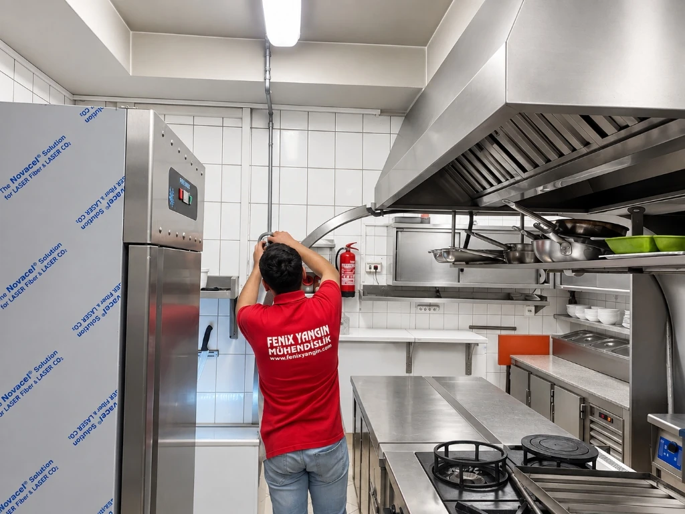

SEKTÖR
Endüstriyel Mutfak
Yangın Güvenliği
Yoğun pişirme alanları, davlumbazlar ve baca hatlarındaki yağ yangınlarına karşı hızlı, otomatik ve NFPA 96 / UL 300 uyumlu söndürme çözümleri.
MUTFAK İÇİN
GÜVENLİ
ÜRETİM

Genel Bakış
Endüstriyel mutfaklar; restoranlar, oteller, hastaneler, yemek fabrikaları ve AVM'lerde gün boyu yüksek sıcaklıkta ve aralıksız çalışan kritik üretim alanlarıdır. Kızgın bitkisel ve hayvansal yağlar, açık alevli ocaklar, fritözler ve yoğun yağ buharı çeken davlumbaz egzoz kanalları en yüksek yangın risk gruplarını oluşturur.
Fenix Yangın; UL 300 ve NFPA 96 standartlarına uygun sıvı kimyasal davlumbaz söndürme sistemleri ile mutfak operasyonunun kesintisiz ve güvenli sürmesini sağlar.
Risk kaynakları
Çözüm Yaklaşımımız
Endüstriyel mutfağınızın kesintisiz ve güvenli çalışmasını sağlayan 4 aşamalı projelendirme ve servis sürecimiz.

Amerex Davlumbaz Söndürme Kurulumu
Fenix Yangın sertifikalı teknik ekibi; restoran, otel ve endüstriyel mutfaklarda Amerex UL 300 ve NFPA 96 uyumlu davlumbaz söndürme sistemlerinin borulama, nozul dağılımı, mekanik tetikleme ve otomatik gaz kesme selenoid vana montajını anahtar teslim hassasiyetle tamamlar.
Önerilen sistemler


Uygulama alanları
Fayda ve avantajlar
İlgili teknik içerikler
İlgili sektörler


Sık Sorulan Sorular
Davlumbaz söndürme sisteminde sıvı kimyasal nasıl etki eder?
Sıvı kimyasal söndürme maddesi (potasyum karbonat veya asetat bazlı), kızgın yağ yüzeyine püskürtüldüğünde sabunlaşma (saponification) tepkimesi oluşturur. Bu köpüksü sabun tabakası oksijen temasını tamamen keser, sıcaklığı hızla düşürür ve yağın yeniden alev almasını (reflash) engeller.
UL 300 standardı neden zorunludur ve geleneksel kuru tozlar neden kullanılmaz?
Modern endüstriyel mutfaklarda yüksek sıcaklığa dayanıklı bitkisel yağlar kullanılır. Kuru kimyevi tozlar bu yüksek ısıyı düşüremez ve yağ yeniden alevlenir. UL 300 standardı, sıvı kimyasal kullanarak hem alevi söndüren hem de soğutma sağlayan sistemleri zorunlu kılar.
Sistem devreye girdiğinde doğalgaz veya LPG hattı otomatik kesilir mi?
Evet. Fenix Yangın davlumbaz sistemleri, mekanik veya elektriksel tetikleme ile pişirme cihazlarına giden gaz akışını selenoid vana üzerinden anında keser ve elektrikli pişiricilerin enerjisini izole eder.
Davlumbaz söndürme sistemlerinin periyodik bakım sıklığı nedir?
NFPA 96 ve Binaların Yangından Korunması Hakkında Yönetmelik gereği, davlumbaz söndürme sistemleri 6 ayda bir yetkili servis tarafından mekanik kontrol, nozul kapakları ve aktivasyon testlerinden geçirilmelidir.
Tesisiniz için en uygun çözümü birlikte planlayalım.
Uzman ekibimiz risk analizi ve sistem önerisi hazırlasın.